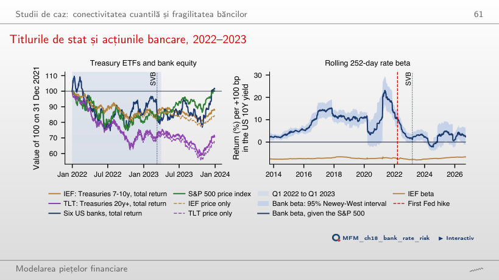

În stînga este slide-ul din curs, în dreapta aceeași figură, calculată în browser din aceleași date. Butonul ▶ modifică parametrul pas cu pas.
Riscul sistemic: de la o bancă la sistem · Expunerea: MES și SRISK · Contribuția: CoVaR · Conectivitatea: rețele de spillover · Rețele în coadă: Financial Risk Meter · Testarea la stres și riscul climatic · Studii de caz: conectivitatea cuantilă și fragilitatea băncilor
Riscul sistemic: de la o bancă la sistem
Trei sisteme bancare, 2010–2026

Răspuns
Portofoliul european: 61%, cu minimul la 2020-04-21. Portofoliul american a pierdut 51% pînă la 2011-11-23, iar cel românesc 47% pînă la 2012-06-06. Volatilitatea anualizată a portofoliilor bancare este 29%, 30% și 23%, față de 18%, 21% și 18% pentru S&P 500, Euro Stoxx 50 și BET.
Expunerea: MES și SRISK
MES 5% pentru treisprezece bănci

Răspuns
Nu există această garanție. Zilele adăugate sînt selectate după randamentul pieței, nu după randamentul băncii, deci MES al unei bănci nu este obligatoriu descrescător în α. În acest eșantion scade pentru toate băncile: pentru JPMorgan, de la 3,21% la 2,34%; este un rezultat empiric, nu o proprietate generală. La α = 5%, S&P 500 pierde în medie 2,72% în acele zile, iar băncile americane între 3,21% (JPMorgan) și 4,03% (Morgan Stanley); în Europa, HSBC pierde 2,53%, față de 3,16% pentru Euro Stoxx 50.
SRISK în funcție de leverage

Răspuns
De la Λ* = 5,8 cu k = 8% și de la 8,2 cu k = 5,5%. Pentru HSBC, banca cu cel mai mic LRMES (37%), pragurile sînt 8,3 și 11,9. Un raport prudențial mai mic ridică pragul fiecărei bănci.
Contribuția: CoVaR
Regresia cuantilă: JPMorgan și celelalte bănci americane

Răspuns
Rămîne aceeași: coeficienții sînt estimați pe întregul eșantion și rămîn fixați; ▶ schimbă doar punctele vizibile și proporția lor aflată sub dreaptă. Animația nu este o estimare recursivă. CoVaR 1% este 6,64% cu JPMorgan la VaR 1% (4,83%), față de 2,03% cu JPMorgan la mediană; diferența, ΔCoVaR 1% = 4,62%, este panta 0,94 înmulțită cu distanța dintre cele două cuantile ale lui JPMorgan. VaR 1% necondiționat al sistemului este 5,07%.
ΔCoVaR 1% pentru unsprezece bănci

Răspuns
Estimările sînt 4,89% și 3,81%, dar niciuna dintre cele 25 de perechi din aceeași regiune nu diferă după corecția Holm. Suprapunerea intervalelor [3,27; 4,79] și [3,68; 5,73] nu este însă testul. Testul Wald comun respinge egalitatea contribuțiilor băncilor americane (p = 0,011). La α = 5% clasamentul se schimbă: corelația Spearman cu clasamentul de 1% este 0,13.
VaR și ΔCoVaR măsoară lucruri diferite

Răspuns
Asocierea de rang estimată este slabă, fără să demonstreze independența. Corelația Spearman descrie asocierea dintre ranguri, nu independența și nici un efect cauzal; 0,13 provine din numai 11 bănci și este incertă. La α = 5%, estimarea este −0,51: nivelul cozii contează. Deutsche Bank și ING au cele mai mari VaR 1% (7,19% și 7,16%) și doar un ΔCoVaR mediu; JPMorgan are unul dintre cele mai mici VaR (4,83%) și unul dintre cele mai mari ΔCoVaR (4,62%).
Contribuție față de expunere

Răspuns
Nu. Inversarea condiționării cere o altă regresie cuantilă, a randamentului ING pe sistem. Pentru ING, contribuția este 4,41%, iar expunerea 6,14%, ambele măsurate față de starea mediană a variabilei pe care condiționăm; ele descriu asocieri în două direcții, nu efecte cauzale. HSBC este cazul opus: contribuția 4,07%, expunerea 3,17%. Expunerea depășește contribuția la patru dintre cele cinci bănci europene.
Conectivitatea: rețele de spillover
Tabelul conectivității pentru treisprezece bănci

Răspuns
Aproximativ 57,8% = 84,0 − 26,3: scădem șocurile proprii. 84,0% include șocurile proprii; 73,7% = 100 − 26,3 include toate celelalte bănci, din toate regiunile. Cifrele sînt medii pe cele șase bănci americane. O bancă americană primește 15,0% din Europa; o bancă europeană primește 72,7% din Europa și 26,2% din SUA. Conectivitatea totală, 63,9%, este media pe toate băncile a proporției venite de la celelalte bănci. Sînt cote normalizate calculate din VAR(2); autocorelarea reziduurilor limitează interpretarea lor ca proporții din dispersia erorii de prognoză.
Rețeaua de spillover net

Răspuns
Rămîn neschimbate: pozițiile nete se calculează din întreaga matrice, iar pragul filtrează doar desenul (4 săgeți peste 3,04 puncte, în loc de 20 peste 1,57). Mai puține săgeți vizibile nu înseamnă o conectivitate estimată mai mică. Transmițători: Citigroup (+19,0), Bank of America (+10,9), Morgan Stanley (+9,9) și JPMorgan (+9,8). Receptori: HSBC (−23,6), BRD (−13,0), Deutsche Bank (−12,6) și Banca Transilvania (−12,2).
Conectivitatea în timp

Răspuns
Observațiile din criză ies mai repede din fereastră: fiecare observație rămîne în fereastra de estimare mai puține zile. Aceasta poate grăbi scăderea indicelui fără să arate o schimbare economică a transmiterii. Cu 250 de zile, indicele crește de la 61,8% în medie în 2019 la 78,4% în primăvara lui 2020, cu maximul 79,3% la 2020-08-27. Cu 100 de zile, maximul este 85,6% la 2020-03-12, iar indicele coboară prima dată cu peste 10 puncte sub maxim la 2020-08-13 (73,4%). Nu există o regulă generală pentru mărimea maximului.
Rețele în coadă: Financial Risk Meter
Financial Risk Meter pentru treisprezece bănci

Răspuns
Nu. Corelațiile descriu mișcarea simultană în cele 390 de ferestre; ele nu stabilesc precedența temporală și nici performanța predictivă out-of-sample. Unitățile diferite nu împiedică folosirea corelației. Proporția predictorilor activi la λ = 2,3 × 10⁻⁴ fix variază de la 32% (2017-11-20) la 67% (2020-06-16), cu media 42%.
Testarea la stres și riscul climatic
Șapte scenarii istorice de stres

Răspuns
Nu. Pentru fiecare lungime se caută din nou cea mai slabă fereastră din episod, cu randamente compuse, iar zilele suplimentare pot include reveniri. Pierderea din episodul Lehman scade de la 37,6% la 34,8%, iar pierderea COVID-19 crește de la 31,9% la 40,7%. În episodul taxei bancare din România, cu 10 zile, Banca Transilvania și BRD pierd cîte 26%, iar băncile americane între 8% și 14%.
Studii de caz: conectivitatea cuantilă și fragilitatea băncilor
Spillover-ul pe cuantile

Răspuns
Nu. RTD = 79,36 − 77,17 = 2,19 puncte descrie diferența dintre indicii la τ = 0,95 și τ = 0,05; o concluzie inferențială cere incertitudinea estimată a diferenței. Faptul că ambele cozi depășesc indicele la medie nu testează egalitatea dintre ele. Indicele la medie este 56,57%; la τ = 0,01 și 0,99 este 88,18% și 91,77%, iar în centru circa 40%.
Titlurile de stat și acțiunile bancare, 2022–2023

Răspuns
Nu respingem un beta nul, deși estimarea punctuală este pozitivă: intervalul conține zero, deci testul nu stabilește semnul coeficientului la 5%; aceasta nu înseamnă că beta este zero. La sfîrșitul lui 2021 estimarea era +12,8%. Sînt asocieri condiționate pe randamentul S&P 500, raportate la o creștere cu 100 bp a randamentului pe 10 ani. Separat, beta IEF, −7,8% la +100 bp, este estimat pe 3 ianuarie 2022 – 9 martie 2023. Între 31 decembrie 2021 și 31 martie 2023, prețul IEF a scăzut cu 13,8%, iar al TLT cu 28,2% (randamente totale: −11,8% și −26,2%).
Prețuri zilnice EODHD, ianuarie 2010 – 18 septembrie 2026: șase bănci americane, cinci bănci europene, două bănci românești (BVB), indicii S&P 500, Euro Stoxx 50, BET și VIX. Scenariile istorice pentru băncile internaționale încep în 2007. Primul studiu de caz: valorile raportate de Ando, Greenwood-Nimmo și Shin (2022). Al doilea studiu de caz: ETF-urile IEF și TLT și randamentul titlului de stat american pe 10 ani (EODHD), din septembrie 2012.